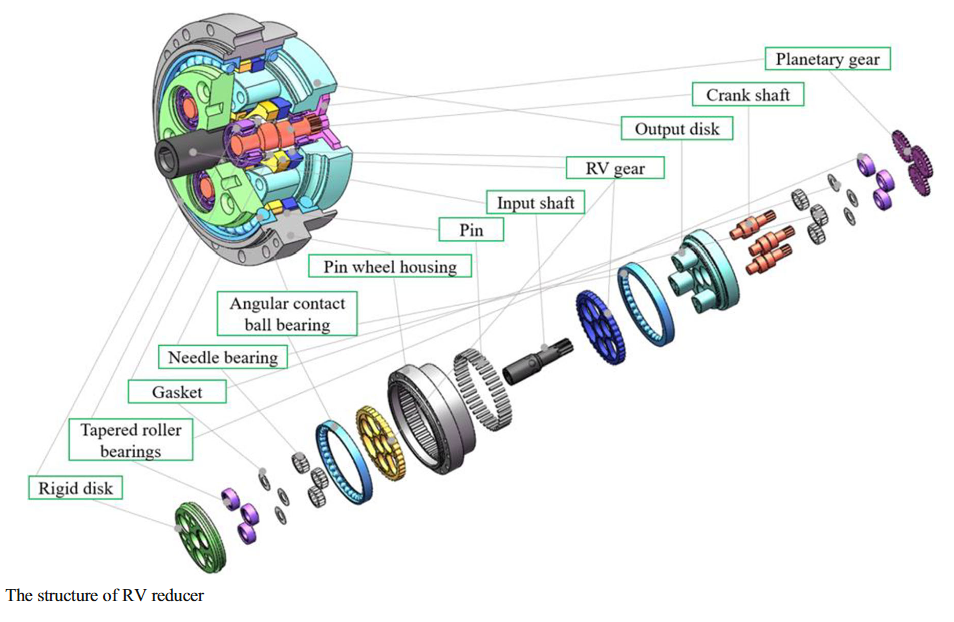
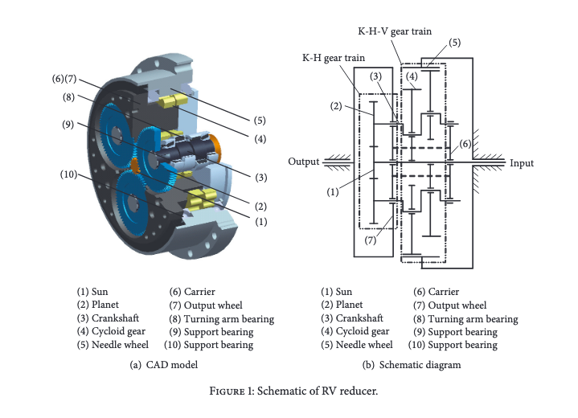

An automatically controlled, reprogrammable, multipurpose manipulator programmablein three or more axes, which may be either fixed in place or mobile for use in industrial automation applications.
Robotics (校園網路下載電子書)
Robotic Systems: https://motion.cs.illinois.edu/RoboticSystems/
https://www.kollmorgen.com/en-us/products/motors/direct-drive/kbm-series-frameless/
Structural Characteristics of Rotate Vector Reducer Free Vibration.pdf
Industrial Robot Rotate Vector Reducer Fault Detection Based on Hidden Markov Models (從校園網路中下載)
2017_Design of Joint Module Equipped with Manually Configurable Reducer for Gearing (從校園網路中下載)

(Source: Reliability-based design optimization for RV reducer with experimental constraint)

(Source: Structural Characteristics of Rotate Vector Reducer Free Vibration)
Inverse Kinematic Analysis and Evaluation of a Robot for Nondestructive Testing Application.pdf
solving Symbolic Inverse Kinematics with Behavior Tree.pdf
Q Learning for Robot Control.pdf
Reinforcement Learning in Robotics: A Survey
Deep Reinforcement Learning for the Control of Robotic Manipulation- A Focussed Mini-Review.pdf
http://ais.informatik.uni-freiburg.de/teaching/ss21/robotics/
http://ais.informatik.uni-freiburg.de/teaching/ws20/mapping/
https://github.com/mithi/robotics-coursework (steps)
Principles of Physics (在校園網路下載電子書)
Applied Linear Algebra (在校園網路下載電子書)
Fundamentals of Robotic Mechanical Systems (在校園網路下載電子書)
Robotics, Vision and Control (在校園網路下載電子書)
Springer Handbook of Robotics (在校園網路下載電子書)
Robotics (在校園網路下載電子書)
Robotics (在校園網路下載電子書))
Automotive Cyber Security (在校園網路下載電子書)
Fundamentals of Mechanicsof Robotic Manipulation (在校園網路下載電子書)
Robot Operating System (在校園網路下載電子書)
https://www.nicholasnadeau.com/publication/nadeau-2019-pybotics/
https://github.com/mdecourse/Obstacle-Avoidance-Using-A-Genetic-Algorithm
https://github.com/mdecourse/PID_wall_following
https://github.com/mdecourse/Painting-robot-simulation-in-V-rep
利用 CoppeliaSim GUI 流程設置求解 IK, 全部利用 API 程式流程設置求解 IK, 利用自行推導的數學式求解 IK, 終至利用自行設計編寫的通用 Symbolic + Numerical Constraint Solver 求解 IK.
https://wiki.blender.org/wiki/Source/Animation/IK
Building-a-Better-IK-Solver.pdf
https://github.com/mdecourse/Mobile-Manipulation
https://github.com/mdecourse/Robotics-Research
https://github.com/craigiedon/ProbRobScene
ProbRobScene - A Probabilistic Specification Languagefor 3D Robotic Manipulation Environments
https://github.com/mdecourse/coppelia_gui_robot_control_python
Copyright © All rights reserved | This template is made with by Colorlib